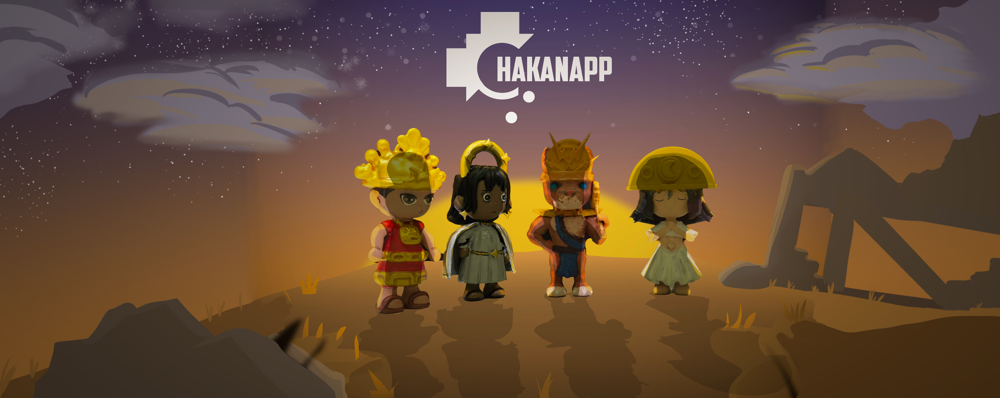
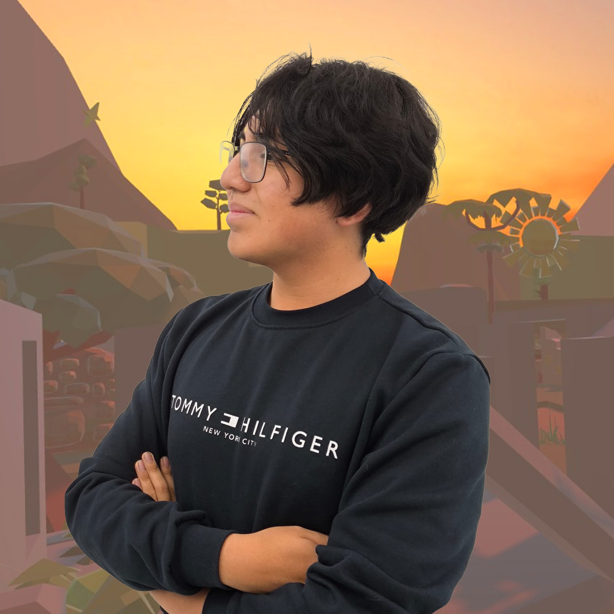
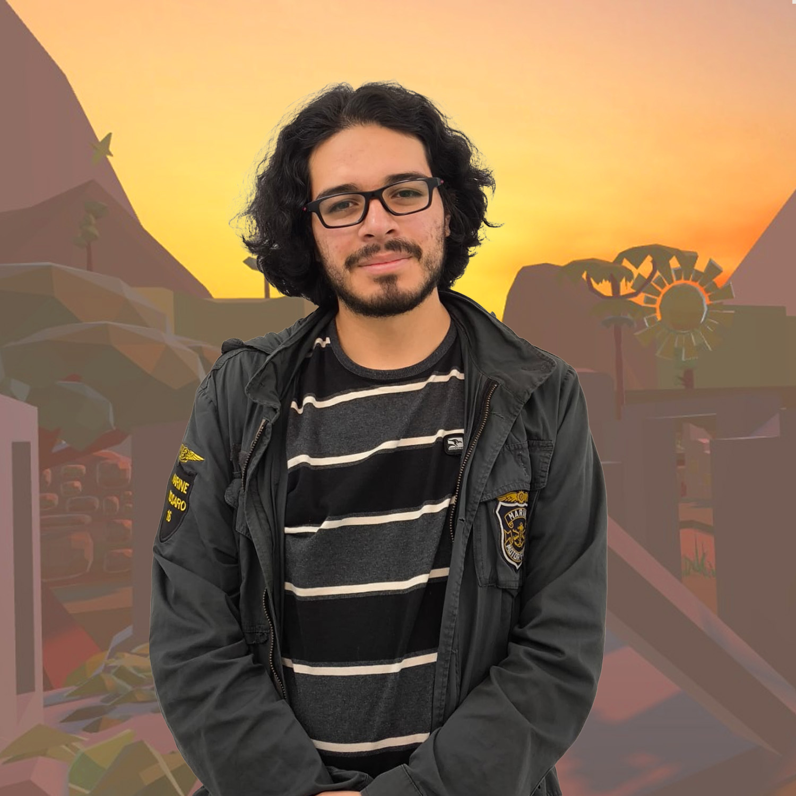
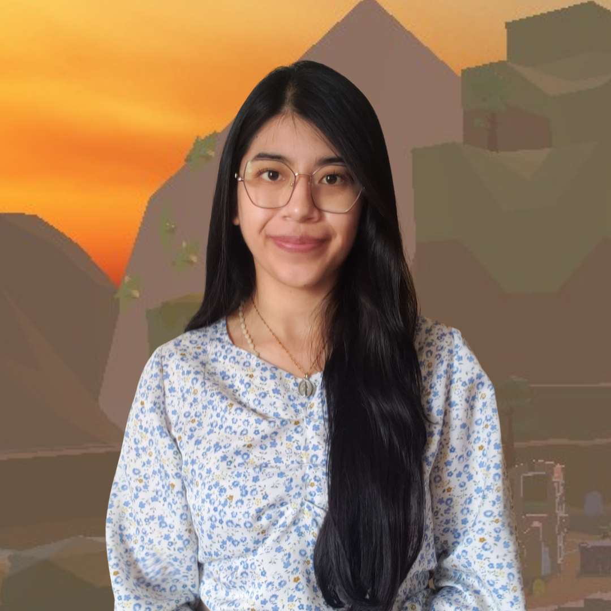

ChacanApp

Sobrer nosotros
ChacanApp al igual que los astros nace de y para las estrellas.
Creemos que nuestros ancestros tienen aun mucho que enseñarnos y quecada estrella arriba en el cielo guarda un secreto.
ChacanApp busca explorar aquellas cosas que nos dejaron ya hace mucho tiempo. Puedes explorar el mundo ancestral de los astros.

En cada una de nuestras cajas misteriosas podras encontrar una de las cuatro figuras
coleccionables de los astros andinos, Illapa, Mamaquilla, Inti y Chasca
Nuestra imagen, figurillas, estilo todo tiene un porque
Explora el misterioso y viejo mundo denuestros ancestros
A veces solo tienes que mirar hacia arriba y creer :3
Galería AR
Accede a la galería AR del proyecto desde el siguiente enlace:
Abrir Galería ARNuestro equipo

Rol: Desarrollador AR - VR / Modelador 3D
Desarrollo de las experiencias VR y AR en unity ademas del modelado del personaje "Illapa".

Rol: Modelador 3D / Concept Art / Diseño Grafico
Encargado del diseño y conceptualizacion de los personajes, director y desarrollador del apartado visual de "ChacanApp", ademas de modelador del personaje de "Mamaquilla".

Rol: Modelador 3D / Packaging /Tester
Tester de las experiencias AR y VR, .

Rol: Modeladora 3D / Packaging / Diseño
Desarrolladora de elementos de interfaz para la experiencia VR y AR, diseñadora del packaging y modelado del personaje de "Inti".